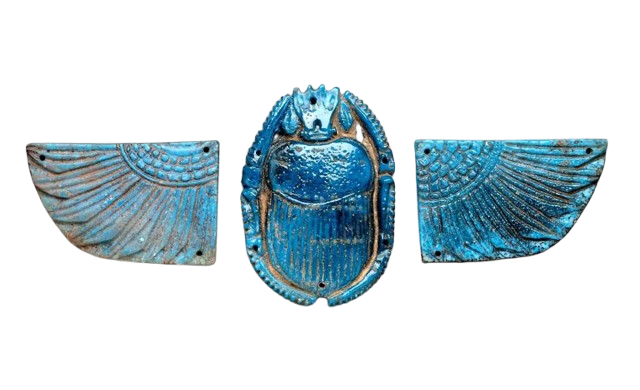
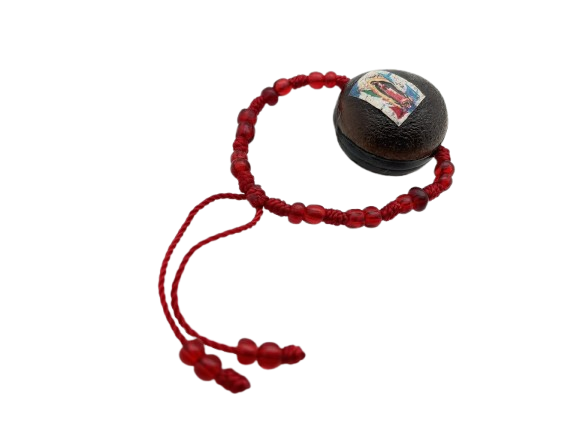
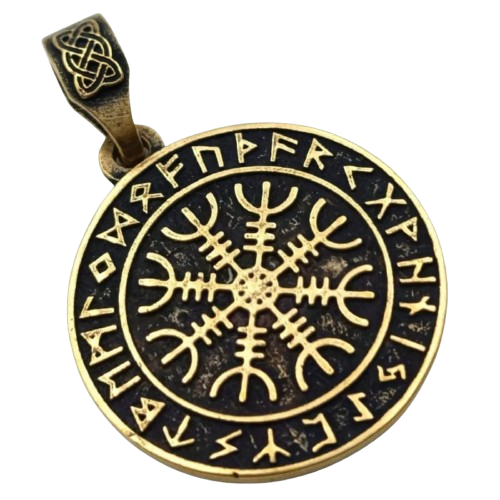
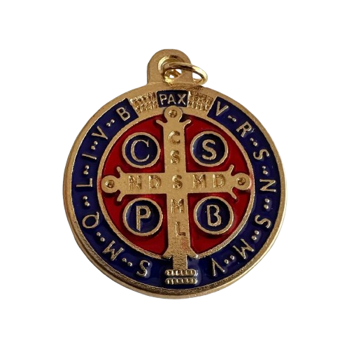
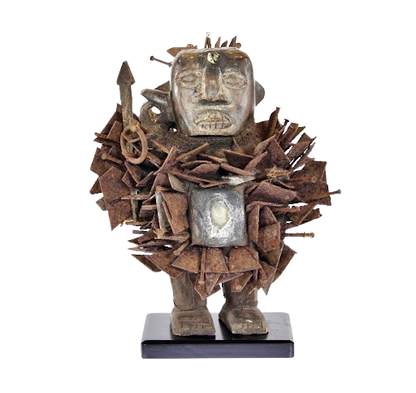
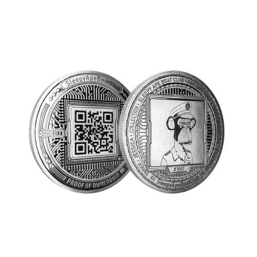
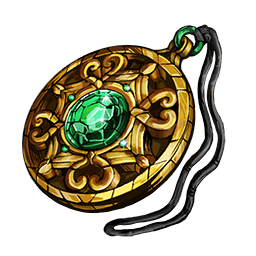
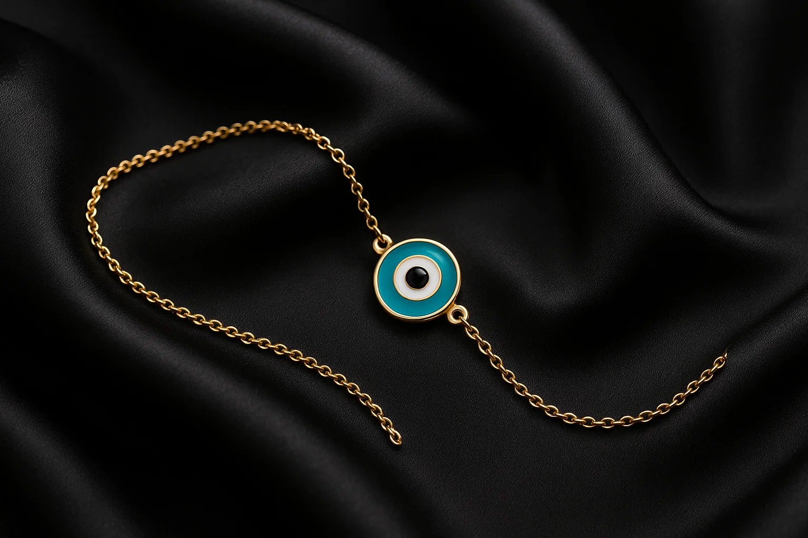

Documentation
Table of Contents
- Introduction
- Project Overview
- Website Architecture
- Content System
- Artifact Collection
- Metadata Standards & Implementation
- Enhanced Metadata Documentation
- User Experience
- Design System
- Design Principles & Rationale
- Technical Implementation
- Technical Decisions & Architecture Rationale
- Accessibility & Performance
- Credits & Licenses
Introduction
Everyday Magic offers an interactive digital museum experience that enhances visitors' understanding of mystical and magical heritage across cultures and civilizations. This project provides a comprehensive digital framework for exploring 13 significant artifacts representing protective symbols, amulets, and mystical traditions, organized into chronological, cross-cultural, and modern magic paths.
By integrating a metadata layer and thematic organization, the platform connects artifacts to their historical, cultural, and spiritual contexts, creating an immersive exploration of humanity's mystical heritage. The website serves as both an educational tool and a digital companion that allows users to explore mystical traditions from anywhere in the world.
This exhibition is uniquely designed to captivate audiences of all ages and knowledge levels. For children, the interactive elements, colorful visuals, and gamified progress system create an engaging learning experience that makes complex cultural concepts accessible and fun. The three-tier content system (Beginner, Casual, Expert) ensures that every visitor, regardless of their background, can engage with the material at their own pace and level of understanding. For casual visitors, the exhibition offers a perfect balance of entertainment and education, with stunning visuals, compelling narratives, and interactive elements that make learning about mystical traditions an enjoyable experience. For experts and scholars, the platform provides deep academic content, comprehensive metadata, and cross-cultural analysis that supports serious research and comparative studies.
This exhibition is particularly well-suited for MAMbo in Bologna for several compelling reasons. Bologna, as a historic university city with deep roots in medieval and Renaissance culture, provides the perfect backdrop for exploring mystical traditions. The city's rich history of scholarship, alchemy, and esoteric knowledge during the Renaissance period aligns perfectly with our exhibition's focus on the evolution of magical thinking from ancient times to the present. MAMbo's commitment to contemporary art and digital innovation makes it an ideal venue for this cutting-edge digital exhibition. The museum's forward-thinking approach to art presentation and its embrace of new technologies perfectly complements our modern, interactive format. Additionally, Bologna's strategic location in Italy, a country with deep mystical and magical traditions, provides local visitors with a strong cultural connection to many of the artifacts and traditions featured in the exhibition.
This exhibition serves multiple educational purposes, making it valuable for various audiences and use cases. As a study tool, it provides comprehensive information about each artifact, including historical context, cultural significance, and comparative analysis. The detailed metadata and cross-references between different traditions make it an excellent resource for students, researchers, and anyone interested in deepening their understanding of mystical heritage. The integrated audio guide system enhances the learning experience by providing expert narration and cultural context for each artifact. These audio guides, featuring voices that embody different aspects of mystical knowledge, create an immersive atmosphere that transports visitors into the world of magical traditions. The audio content is particularly valuable for visitors who prefer auditory learning or who want to experience the exhibition while engaging in other activities.
Beyond its entertainment value, this exhibition serves as a valuable resource for scientific and academic research. The comprehensive documentation of artifacts, their cultural contexts, and cross-cultural comparisons provides researchers with rich data for anthropological, historical, and cultural studies. The digital format allows for easy data extraction, analysis, and sharing among the academic community. The exhibition's focus on the evolution of mystical thinking across time and cultures offers unique insights into human psychology, cultural development, and the persistence of magical beliefs in the modern world. This makes it particularly valuable for researchers studying cognitive anthropology, cultural evolution, and the intersection of traditional beliefs with contemporary technology.
This exhibition represents the cutting edge of modern museum presentation, combining traditional educational content with contemporary digital technology. The gamified elements, interactive maps, and adaptive content system create an engaging, modern experience that appeals to today's tech-savvy audiences. The sleek, glassmorphic design aesthetic and smooth animations create a fashionable, Instagram-worthy experience that encourages social sharing and digital engagement. The platform's responsive design ensures optimal viewing across all devices, from smartphones to large displays, making it accessible to visitors regardless of their preferred technology. The modern interface design, with its intuitive navigation and engaging visual elements, creates a user experience that feels contemporary and exciting, appealing to both younger audiences and those who appreciate cutting-edge digital design.
One of the most innovative aspects of this exhibition is its dynamic, evolving nature. Unlike traditional static exhibitions, this digital platform can be continuously updated and expanded. New artifacts can be added to reflect emerging trends in contemporary magical practices, such as new forms of digital spirituality, modern protective symbols, or recently discovered historical artifacts. The exhibition can also adapt to changing cultural contexts and visitor feedback. Artifacts can be replaced or updated based on new research findings, changing cultural significance, or visitor interest. This flexibility ensures that the exhibition remains relevant and engaging over time, providing visitors with fresh content and new discoveries on each visit. The digital format also allows for seasonal themes, special exhibitions, and collaborative content creation with other museums and cultural institutions.
This groundbreaking exhibition represents the first digital museum experience where visitors can earn an official certificate upon completion. Through our innovative gamification system, visitors progress through various paths, interact with artifacts, and complete educational challenges to earn a personalized certificate of completion. This unique feature transforms the traditional museum visit into an accredited learning experience, making it the first online exhibition to offer formal recognition of cultural heritage education. The certificate system adds significant academic value and encourages deeper engagement with the content, positioning this exhibition as a pioneering model for digital cultural education and certification.
Project Overview
We selected the theme of mystical traditions and protective symbols for this project due to their universal appeal and rich cultural significance. These artifacts highlight humanity's enduring fascination with the supernatural, spiritual protection, and the intersection of belief systems across different civilizations and time periods.
The collection spans from ancient Egyptian scarabs to modern digital artifacts, demonstrating how mystical thinking persists and evolves across cultures and technological eras. This comprehensive approach allows visitors to understand both the historical continuity and contemporary relevance of magical traditions.
Website Architecture
Navigation System
The website implements a dual navigation system: a fixed top navigation bar for main sections and floating navigation arrows for sequential exploration. The left arrow always leads back to the home page, while the right arrow guides users to the next logical step in their chosen path.
Core Pages
- Homepage: Introduction to mystical traditions, user type selection, and path overview
- Chronological Path: Historical evolution of magical beliefs from ancient times to modern technology
- Cross-Cultural Path: Comparison of magical traditions across different civilizations
- Modern Magic Path: Contemporary magical practices and digital spirituality
- Museum Map: Interactive visualization of artifact locations and spatial relationships
- About & Documentation: Project information and technical details
User Experience Choice
The website offers a tailored experience based on the visitor's background knowledge. Users can select different levels of interaction, ensuring accessibility for both casual visitors and those with a deeper understanding of mystical traditions. The three available text options — Beginner, Casual, and Expert — adapt in length, specialized terminology usage, and explanation depth to provide a personalized experience.
Content System
Content Adaptation Overview
Our museum implements a sophisticated adaptive content system with three content levels: "What is it?" (basic identification), "Tell Me More" (expanded context), and "Full Story" (comprehensive analysis). Each level adapts to user competency (Beginner, Casual, Expert) and content detail requirements.
For detailed information about content adaptation levels, user competency requirements, and implementation details, see the "Enhanced Metadata Documentation" section.
Audio Guide System
Our audio guide system features carefully curated voices that represent different aspects of mystical knowledge and storytelling. We deliberately chose voices that embody wisdom and experience, making visitors feel as if they're being guided by ancient guardians of knowledge.
Audio Guide Voices
-
Elder Voice:
Deep, resonant voice representing ancient wisdom and traditional knowledge passed down through generations
-
Historian Narrator:
Clear, scholarly voice embodying academic expertise and historical context for the artifacts
-
Old Magician:
Mysterious, enchanting voice representing the mystical and magical aspects of the collection
Artifact Collection
The collection includes 13 carefully selected artifacts representing mystical traditions from ancient civilizations to contemporary digital culture, meeting the academic requirement for 15-20 real items with rich conceptual and graphical presentation. Each artifact is provided with comprehensive metadata following international museum standards (Dublin Core + CIDOC-CRM), including systematic identifiers, period, culture of origin, type, materials, and narrative path classification. The artifacts are organized into three thematic paths that create coherent narrative structures, with each item positioned in specific virtual museum spaces that provide adequate visitor space and logical exploration flow.
Note: For detailed metadata examples of two representative artifacts (Turkish Evil Eye and Scarab Amulet), see the "Metadata Standards & Implementation" section. The table below provides a comprehensive overview of all artifacts in the collection.
| Item Image | Item Name | Identifier | Period | Culture/Origin | Type | Materials | Narrative Path |
|---|---|---|---|---|---|---|---|
|  | Scarab Amulet | AMULET-EGYPT-001 | 3000 BCE - 30 BCE | Ancient Egyptian | Protective Symbol & Funerary Object | Steatite, faience, carved stone | Chronological Path, Cross-Cultural Path |
| Omamori Charm | AMULET-JAPAN-001 | 1603-1868 CE | Japanese | Protective Charm | Silk, paper, calligraphy, brocade | Chronological Path, Cross-Cultural Path | |
|  | Ojo de Venado | AMULET-MESO-001 | Pre-1492 CE | Mesoamerican | Protective Amulet | Deer eye, leather, beads, natural fibers | Chronological Path, Cross-Cultural Path |
|  | Aegishjalmr | AMULET-NORSE-001 | 793-1066 CE | Norse | Protective Symbol | Carved wood, metal, runic inscriptions | Chronological Path, Cross-Cultural Path |
|  | St. Benedict Medal | AMULET-CHRIST-001 | 500-1500 CE | Christian | Protective Medal | Silver, bronze, religious inscriptions | Chronological Path, Cross-Cultural Path |
|  | Bantu Fetish | AMULET-AFRICA-001 | Traditional (ongoing) | African Bantu | Spiritual Object | Wood, beads, shells, natural materials | Chronological Path, Cross-Cultural Path |
| Korean Ritual Knife | AMULET-KOREA-001 | 1392-1897 CE | Korean | Ritual Tool | Steel, bronze, ceremonial decorations | Chronological Path, Cross-Cultural Path | |
| Slavic Protection Doll | AMULET-SLAVIC-001 | Traditional (ongoing) | Slavic | Protective Doll | Fabric, straw, herbs, protective symbols | Chronological Path, Cross-Cultural Path | |
|  | NFT QR Code | AMULET-DIGITAL-001 | 2020-2025 CE | Digital Culture | Modern Artifact | Digital code, blockchain, QR technology | Chronological Path, Modern Magic Path |
|  | RPG Amulet | AMULET-GAMING-001 | 2000-2025 CE | Gaming Culture | Virtual Artifact | Digital design, game engine, virtual materials | Chronological Path, Modern Magic Path |
| Turkish Evil Eye | AMULET-TURKISH-001 | Traditional (Ancient - Present) | Turkish | Protective Amulet | Glass bead, blue and white concentric circles | Chronological Path, Cross-Cultural Path, Modern Magic Path | |
|  | Rose Quartz | AMULET-CRYSTAL-001 | Ancient (ongoing) | Universal | Healing Crystal | Rose quartz stone, natural crystal formation | Chronological Path, Modern Magic Path |
| Black Stone | AMULET-STONE-001 | Prehistoric (ongoing) | Universal | Protective Stone | Black stone, natural mineral formation | Chronological Path, Modern Magic Path |
Metadata Standards & Implementation
Academic Standards Selection
Following the MMMM project requirements for "professionally catalogued" artifacts with "metadata vocabularies appropriate for their nature," we have implemented a hybrid approach combining Dublin Core and CIDOC-CRM standards. This choice ensures academic rigor while maintaining practical usability for museum visitors.
Dublin Core Implementation
Standard Choice: Dublin Core was selected as the primary metadata standard due to its widespread adoption in cultural heritage institutions and its comprehensive coverage of essential descriptive elements. We implement 8 core Dublin Core elements that provide systematic and uniform artifact description.
Implemented Dublin Core Elements:
- Title - Official artifact name in English and original language
- Creator - Cultural tradition or historical period of origin
- Date - Chronological period or era designation
- Type - Functional classification (Protective Amulet, Ritual Tool, etc.)
- Format - Physical characteristics and material composition
- Identifier - Unique systematic ID (AMULET-[CULTURE]-[SEQUENTIAL])
- Description - Multi-level narrative content (Brief/Medium/Long)
- Subject - Cultural significance and thematic associations
CIDOC-CRM Integration
Standard Choice: CIDOC-CRM (Conceptual Reference Model) was integrated to capture complex relationships between artifacts, cultures, and historical contexts. This standard enables sophisticated narrative connections and supports the multi-path exploration system.
CIDOC-CRM Entity-Relationship Model:
- E22 Human-Made Object - Artifact classification
- P46 is composed of - Material composition relationships
- P4 has time-span - Temporal context and periodization
- P55 has current location - Virtual museum placement
- P2 has type - Functional categorization
- P19 was intended use of - Cultural purpose and significance
Complete Metadata Examples
Below are detailed examples of how metadata is structured for two representative artifacts, demonstrating the integration of Dublin Core and CIDOC-CRM standards:
Metadata Export Formats
To ensure interoperability and academic accessibility, our metadata system supports multiple export formats:
- JSON Format: Machine-readable export for API integration and data analysis
- CSV Format: Tabular export for research and comparative studies
- XML Format: Standardized export following Dublin Core XML schema
JSON Export Examples - Demonstrating Model Scalability
Turkish Evil Eye (AMULET-TURKISH-001):
{
"dublin_core": {
"title": "Turkish Evil Eye (Nazar Boncuğu)",
"creator": "Mediterranean Cultural Tradition",
"date": "Traditional (Ancient - Present)",
"type": "Protective Amulet",
"format": "Glass bead, blue and white concentric circles",
"identifier": "AMULET-TURKISH-001",
"description": {
"brief": "Blue glass bead amulet protecting against evil eye",
"medium": "Traditional Turkish protective charm with ancient Mediterranean origins...",
"long": "The Turkish Evil Eye represents a complex cultural tradition..."
},
"subject": ["Protection", "Mediterranean Culture", "Folk Beliefs"]
},
"cidoc_crm": {
"entity": "E22 Human-Made Object",
"relationships": {
"P102_has_title": "Turkish Evil Eye",
"P108i_was_produced_by": "E74_Group",
"P4_has_time_span": "E52_Time-Span",
"P2_has_type": "E55_Type",
"P46_is_composed_of": "E57_Material"
}
},
"narrative_paths": ["Chronological", "Cross-Cultural", "Modern Magic"],
"museum_location": "Floor 1, Room B, Position 3"
}Scarab Amulet (AMULET-EGYPT-001):
{
"dublin_core": {
"title": "Scarab Amulet (Kheperer)",
"creator": "Ancient Egyptian Civilization",
"date": "3000 BCE - 30 BCE (Ancient Egypt)",
"type": "Protective Symbol & Funerary Object",
"format": "Carved stone (steatite, faience), beetle form with hieroglyphs",
"identifier": "AMULET-EGYPT-001",
"description": {
"brief": "Sacred beetle amulet symbolizing rebirth and protection",
"medium": "Ancient Egyptian scarab representing solar cycle and resurrection...",
"long": "The scarab amulet embodies complex Egyptian cosmology..."
},
"subject": ["Rebirth", "Protection", "Solar Symbolism", "Funerary Practices"]
},
"cidoc_crm": {
"entity": "E22 Human-Made Object",
"relationships": {
"P102_has_title": "Scarab Amulet",
"P108i_was_produced_by": "E74_Group",
"P4_has_time_span": "E52_Time-Span",
"P2_has_type": "E55_Type",
"P46_is_composed_of": "E57_Material"
}
},
"narrative_paths": ["Chronological", "Cross-Cultural"],
"museum_location": "Floor 0, Room A, Position 1"
}CSV Export Example - Demonstrating Model Scalability
The following CSV format demonstrates how the metadata model scales across all artifacts while maintaining consistency:
Identifier,Title,Creator,Date,Type,Format,Subject,Narrative_Paths,Museum_Location
AMULET-EGYPT-001,Scarab Amulet (Kheperer),Ancient Egyptian Civilization,3000 BCE - 30 BCE,Protective Symbol & Funerary Object,Carved stone (steatite faience) beetle form with hieroglyphs,Rebirth; Protection; Solar Symbolism; Funerary Practices,Chronological; Cross-Cultural,Floor 0 Room A Position 1
AMULET-JAPAN-001,Omamori Charm,Japanese,1603-1868 CE,Protective Charm,Silk paper calligraphy brocade,Protection; Tradition; Spirituality,Chronological; Cross-Cultural,Floor 1 Room B Position 2
AMULET-TURKISH-001,Turkish Evil Eye (Nazar Boncuğu),Mediterranean Cultural Tradition,Traditional (Ancient - Present),Protective Amulet,Glass bead blue and white concentric circles,Protection; Mediterranean Culture; Folk Beliefs,Chronological; Cross-Cultural; Modern Magic,Floor 1 Room B Position 3
AMULET-DIGITAL-001,NFT QR Code,Digital Culture,2020-2025 CE,Modern Artifact,Digital code blockchain QR technology,Digital Art; Blockchain; Modern Spirituality,Chronological; Modern Magic,Floor 2 Room C Position 1Quality Assurance & Validation
Our metadata implementation follows the RSTU principles specified in the MMMM project requirements:
- Rich: Comprehensive coverage including provenance, characteristics, and editorial data
- Systematic: All artifacts follow identical metadata structure with consistent field completion
- Tailored: Fields are adapted to amulet-specific characteristics while maintaining standard compliance
- Uniform: Consistent formatting and terminology across all 13 artifacts enables data aggregation and analysis
Website Implementation
On the website, each artifact displays basic metadata (title, period, culture, type, photo, narrative path) in user-friendly card format. The deeper content levels ("What is it?", "Tell me more", "Full story") provide narrative explanations rather than technical metadata, ensuring accessibility for all visitors while maintaining academic rigor in the underlying data structure.
QR Code System Implementation
Following the MMMM project requirement that "Each item is then provided with a QR code leading to more information about the item itself," we have implemented a comprehensive QR code system that integrates with our existing narrative paths:
- Museum Map Integration: Each artifact on the interactive museum map displays a QR code when clicked, providing direct access to the artifact's detailed page within the appropriate narrative path
- Smart URL Routing: QR codes automatically route visitors to the correct page based on artifact type:
- Most Amulets: Route to
/magic.html?artifact=[ID]&src=qr - Other Artifacts: Route to
/chrono.html?artifact=[ID]&src=qr
- Most Amulets: Route to
- Analytics Tracking: The
?src=qrparameter enables tracking of QR code usage and visitor engagement - Print-Ready Labels: A dedicated
qr-print.htmlpage generates printable QR code labels for physical museum placement
QR Code Example (Scarab Amulet):
Identifier: SCARAB-001
Generated URL: https://arinnee.github.io/MMM/chrono.html?artifact=SCARAB-001&src=qr
Purpose: Visitors can scan the QR code to open the artifact's detailed page within the Chronological Path on their mobile devices
Enhanced Metadata Documentation
Note: For detailed information about metadata standards, implementation details, and examples, see the "Metadata Standards & Implementation" section above. This section focuses on the broader academic framework and content adaptation system.
Content Adaptation System
Our dual-axis content adaptation system ensures that every visitor receives appropriate information depth and complexity, regardless of their background knowledge or time constraints.
Metadata Structure & Implementation
Our metadata structure is designed to serve both academic researchers and casual visitors, providing multiple levels of detail while maintaining consistency across all artifacts.
Core Metadata Fields
The system employs four primary metadata fields: Identifier (AMULET-[CULTURE]-[SEQUENTIAL] format for systematic classification), Period (chronological classification for timeline exploration), Culture/Origin (cultural attribution for cross-cultural analysis), and Material & Technique (technical specifications for craftsmanship understanding).
Narrative Path Classification
Artifacts are assigned to multiple narrative paths based on chronological relevance, cultural significance, and thematic connection. This multi-path approach reflects the complexity of cultural heritage and provides multiple entry points for exploration. For example, the Turkish Evil Eye appears in all three paths due to its ancient origins, Mediterranean cultural context, and contemporary usage.
Content Adaptation Framework
The dual-axis content adaptation system implements the MMMM project requirements for multiple descriptive texts according to age, competency, and detail level axes. This framework ensures appropriate information depth and complexity for all visitor types.
Content Adaptation Framework
The system implements a dual-axis adaptation framework: User Competency (Beginner: 11-13 y.o., no background; Casual: general adults, some knowledge; Expert: scholars, researchers) and Content Detail (Brief: 2-3 lines, <1 min; Medium: 10-15 lines, 1-2 min; Long: as needed, several min).
Content characteristics vary systematically: Beginner level employs simple language and visual emphasis; Casual level provides balanced information with cultural context; Expert level offers detailed analysis with academic references and comparative studies.
For detailed metadata structure and implementation examples, see the "Metadata Standards & Implementation" section above.
Metadata Quality & Validation
We maintain high metadata quality through systematic validation, consistent formatting, and regular review processes that ensure accuracy and completeness.
Quality Assurance & Interoperability
Metadata validation follows three criteria: completeness, accuracy (verified against reliable sources), and consistency. The system supports export in multiple formats (JSON, CSV) for integration with other cultural heritage platforms and is designed for scalability without structural changes.
User Experience
Adaptive Content System Overview
Our museum implements a sophisticated adaptive content system that tailors the visitor experience based on their background knowledge and interests. This system ensures that every visitor, regardless of their expertise level, can engage with the content in a meaningful and accessible way.
User Type Selection
Upon entering the museum, visitors choose from three user types: Beginner (families with children, newcomers), Casual (curious adults, students), and Expert (researchers, scholars). Each type receives appropriately tailored content depth and complexity.
Dynamic Content Adjustment
Users can dynamically adjust content levels during their visit using "What is it?", "Tell Me More", and "Full Story" options. This creates a personalized learning experience where visitors can start with basic information and gradually increase complexity as their understanding grows.
For detailed information about content adaptation levels and user competency requirements, see the "Metadata Standards & Implementation" section.
Virtual Assistants
Our museum features four virtual assistants that represent different aspects of mystical knowledge and cultural heritage. Each assistant has been designed with a unique personality and expertise area, reflecting the diversity of magical traditions represented in our collection.

Eleanor Whitmore
Victorian Mystic & Spiritualist
Expert in 19th-century spiritual practices, Victorian occultism, and the intersection of science and mysticism during the Industrial Revolution.

Maestro Lorenzo di Firenze
Renaissance Scholar & Alchemist
Master of Renaissance magic, alchemical traditions, and the revival of classical knowledge during the 15th-17th centuries.
Maya
Ancient Wisdom Keeper
Guardian of prehistoric and ancient magical traditions, specializing in earth-based spirituality and primal protective practices.

Petr III
Slavic Mystic & Folklorist
Expert in Slavic magical traditions, folk beliefs, and the rich tapestry of Eastern European spiritual practices and protective symbols.
Progress Tracking & Gamification System
Our museum implements an advanced gamification system that transforms the traditional museum visit into an engaging, interactive experience with multiple reward mechanisms and progress tracking across all aspects of the exhibition. The coin system serves as the primary reward mechanism, encouraging active engagement with exhibition content. Users earn coins through various activities: 10 coins for every 3-5 significant actions within a path, 50 coins for completing entire paths, 15 coins for discovering new themes, 12 coins for theme exploration, and 8 coins for exploring new questions with virtual assistants. The system intelligently tracks user interactions to prevent duplicate rewards, ensuring fair and balanced progression. Coins are displayed prominently in the progress interface and contribute significantly to the knowledge vessel progression, creating a tangible sense of achievement and advancement.
The knowledge vessel represents the user's overall progress through the exhibition, filling based on two key factors: path completion (30% of total capacity) and coin accumulation (70% of total capacity). Each path has specific completion requirements: Chronological Path requires 15 actions, Magic Path requires 20 actions, Cross-Cultural Path requires 12 actions, and Museum Map requires 8 actions. Path completion is tracked through various user interactions including artifact exploration, audio engagement, theme switching, navigation, and content level changes. The vessel's visual representation provides immediate feedback on progress, with smooth animations and real-time updates that enhance the user experience.
Upon reaching 100% vessel capacity, users unlock access to an official certificate of completion, making this the first online museum exhibition to offer formal recognition of cultural heritage education. The certificate system includes a personalized form where users enter their name, generating a professional document that validates their completion of the comprehensive exhibition experience. This feature transforms the digital visit into an accredited learning experience, adding significant academic value and encouraging deeper engagement with the content. The certificate serves as both a personal achievement and a professional credential for cultural heritage education.
The system implements sophisticated achievement tracking across multiple dimensions including path exploration, theme discovery, artifact interaction, and user engagement patterns. Achievements are awarded for milestones such as completing 10 actions, discovering new themes, and fully exploring exhibition paths. The achievement system maintains a history of the last 10 accomplishments, providing users with a comprehensive record of their museum journey. Each achievement includes descriptive text and visual indicators, creating a sense of progression and accomplishment that motivates continued exploration.
All progress is tracked in real-time with immediate visual feedback through the floating progress interface. The system monitors user interactions across all exhibition elements including navigation buttons, theme switches, artifact interactions, audio controls, and content level changes. Progress data is automatically saved to localStorage, ensuring persistence across browser sessions and device changes. The interface provides comprehensive statistics including total coins earned, vessel completion percentage, explored paths count, and total actions taken, giving users complete visibility into their exhibition progress and achievements.
Design System
Design Philosophy
Our design approach emphasizes the balance between aesthetic appeal and functional accessibility. We believe that digital museum experiences should be both visually engaging and intellectually stimulating, allowing visitors to explore cultural heritage in meaningful and personalized ways.
Theme System Overview
Our museum implements a sophisticated four-theme system that allows users to experience the content through different historical and cultural lenses. Each theme is carefully designed to reflect the typographic and aesthetic principles of its respective period, creating an authentic and immersive experience.
Unique Background Images: Each theme features its own distinctive background image that sets the visual atmosphere and cultural context for the entire experience. These backgrounds are carefully selected to represent the aesthetic and cultural characteristics of their respective historical periods.
Theme 1: Renaissance & Baroque (1500-1800)
Background: Parchment texture with classical Renaissance aesthetic
Typography
Elegant serif fonts with classical proportions, inspired by Renaissance manuscripts and illuminated texts. Typography emphasizes formality and scholarship, reflecting the structured approach to mystical knowledge during this period.
Color Palette
Rich golds (#D4AF37), deep browns (#8B4513), and warm earth tones create an opulent atmosphere reminiscent of illuminated manuscripts and Renaissance art.
Theme 2: Victorian & Romantic (XIX Century)
Background: Victorian ornamental pattern with intricate floral and geometric designs
Typography
Refined serif fonts with increased contrast and decorative elements. Typography choices reflect the romantic, detailed aesthetic of 19th-century publications, with emphasis on elegance and sophistication.
Color Palette
Muted earth tones (#8B7355), soft creams (#F5F5DC), and accent colors like burgundy (#800020) create a romantic, detailed aesthetic.
Theme 3: Modernism (Early XX Century)
Background: Art Deco geometric pattern with clean lines and modernist aesthetic
Typography
Clean, geometric sans-serif fonts with strong hierarchy. Design emphasizes clarity and function, reflecting the principle of "form follows function" while maintaining readability and visual impact.
Color Palette
High contrast black (#000000) and white (#FFFFFF) with primary color accents (#FF6B35) create a bold, functional aesthetic.
Theme 4: Digital Age (Late XX Century)
Background: Modern digital pattern with contemporary tech-inspired elements
Typography
Contemporary web fonts optimized for screen readability. Design incorporates contemporary trends while ensuring accessibility and user experience across all devices.
Color Palette
Vibrant, saturated colors (#FF6B9D, #4ECDC4) with gradients and transparency effects create a contemporary, dynamic aesthetic.
Base Design System
Base Typography
For the main interface and navigation, we use Cinzel, a serif font that embodies classical elegance and historical authenticity. This font choice reflects the timeless nature of mystical traditions while ensuring excellent readability across all devices.
Base Color Palette
The foundation of our color system uses dark backgrounds with gold accents, creating a mystical and elegant atmosphere:
Base Palette: #121212 #bfa76a #e08aff #f3ecf9
Design Principles & Rationale
Golden Ratio & Proportional Design
Our design system is fundamentally based on the golden ratio (φ ≈ 1.618), which has been used in art and architecture for centuries to create harmonious proportions. This mathematical principle guides our layout decisions, spacing, and element sizing to ensure visual balance and aesthetic appeal.
Proportional System Implementation
Margins and Padding: We use a consistent proportional system where base margins are 1rem, and larger spacing follows the golden ratio progression: 1rem, 1.618rem, 2.618rem, 4.236rem. This creates a harmonious visual rhythm throughout the interface.
Element Sizing: Card widths, image containers, and content blocks are sized using golden ratio proportions. For example, our main content area uses a max-width of 1200px, with internal elements sized at 742px (1200 ÷ 1.618) for optimal visual balance.
Typography Scale & Hierarchy
Font Size Progression: Our typography scale follows a modified golden ratio progression: 0.9rem (base), 1rem, 1.618rem, 2.618rem, 4.236rem. This ensures that text hierarchy is both mathematically sound and visually pleasing.
Line Height Rationale: We use line-height: 1.618 for body text, which provides optimal readability while maintaining the golden ratio aesthetic. For headings, we use line-height: 1.2 to create clear visual separation.
Layout Principles & Grid Systems
Our layout system is based on established principles of visual hierarchy, user experience design, and cultural heritage presentation. Every layout decision is deliberate and serves a specific purpose in guiding user attention and information flow.
Grid System Rationale
CSS Grid Implementation: We chose CSS Grid over Flexbox for main layouts because it provides better control over two-dimensional layouts and allows for more sophisticated responsive behavior. Our grid system uses auto-fit and minmax() for intelligent column adaptation.
Breakpoint Strategy: Our responsive breakpoints (768px, 1024px, 1200px) are based on common device sizes and content readability requirements. We tested these breakpoints extensively to ensure optimal user experience across all devices.
Spacing & Alignment Principles
Consistent Spacing: We use a 4px base unit system (4px, 8px, 16px, 24px, 32px, 48px) for consistent spacing throughout the interface. This creates visual harmony and makes the interface easier to scan and navigate.
Alignment Rationale: Text alignment choices are deliberate: center alignment for headings creates visual balance, left alignment for body text improves readability, and right alignment for navigation elements creates clear visual hierarchy.
Animation & Interaction Principles
Our animation system is designed to enhance user experience without being distracting. Every animation serves a specific purpose: providing feedback, guiding attention, or creating visual interest.
Animation Timing & Easing
Duration Rationale: We use 0.3s for most animations because it's fast enough to feel responsive but slow enough to be visible and pleasant. For complex animations, we use 0.6s to allow users to appreciate the visual effect.
Easing Functions: We use cubic-bezier(0.4, 0, 0.2, 1) for most transitions because it provides natural, human-like movement. For hover effects, we use ease-in-out to create smooth, bidirectional animations.
Visual Effect Rationale
Backdrop-Filter Usage: We implement backdrop-filter: blur() effects to create depth and modern glassmorphic aesthetics. This choice reflects contemporary design trends while maintaining accessibility and performance.
Box-Shadow Strategy: Our multi-layered box-shadow approach creates realistic depth perception. We use rgba() colors with varying opacity levels to simulate natural lighting and create visual hierarchy.
Accessibility & Usability Principles
Every design decision considers accessibility and usability. We follow WCAG 2.1 AA guidelines and implement inclusive design principles to ensure our museum is accessible to all visitors.
Color Contrast & Readability
Contrast Ratios: We maintain a minimum contrast ratio of 4.5:1 for normal text and 3:1 for large text, exceeding WCAG requirements. Our gold accent color (#bfa76a) was specifically chosen for its excellent contrast against dark backgrounds.
Text Sizing: Our minimum font size of 0.9rem (14.4px) ensures readability across all devices. We use relative units (rem) to respect user browser settings and provide scalable text.
Interactive Element Design
Touch Target Sizing: All interactive elements are sized at minimum 44px × 44px to meet accessibility guidelines for touch devices. This ensures that users with motor difficulties can easily interact with our interface.
Focus Indicators: We provide clear focus indicators for keyboard navigation, using both color changes and outline properties to ensure visibility across all themes and user preferences.
Technical Implementation
Metadata Architecture & Academic Standards
Our project implements a comprehensive metadata system that adheres to international museum and academic standards, following the requirements for 15-20 real items with rich conceptual and graphical presentation within narrative contexts.
The metadata architecture follows established museum and cultural heritage vocabularies including Dublin Core, CIDOC-CRM, and Getty Vocabularies. Each of our 13 carefully selected artifacts is provided with comprehensive metadata including: Period (chronological classification), Culture/Origin (geographic and cultural attribution), Type (functional classification), and Narrative Path (thematic organization across multiple pathways). The system implements hierarchical classification with cross-references between artifacts, enabling users to explore connections across different cultural traditions and historical periods.
Each artifact is presented with rich conceptual and graphical content that considers both the item and its audience. The metadata system implements dual-axis content adaptation: User Competency Levels (Beginner, Casual, Expert) and Content Detail Levels (Brief, Medium, Long). This creates a sophisticated matrix of 6 possible content variations per artifact, ensuring appropriate information depth for different user types. The system automatically adapts content presentation based on user selection, providing age-appropriate, competency-matched, and language-appropriate descriptions that maintain academic rigor while ensuring accessibility.
Museum Layout & Spatial Organization
The virtual museum implements a sophisticated spatial organization system that mirrors real museum planning principles, with adequate visitor space and logical artifact placement.
Our museum layout follows established museum design principles with three distinct thematic rooms: Chronological Path (timeline-based historical progression), Cross-Cultural Path (geographic and cultural comparison), and Modern Magic Path (contemporary digital spirituality). Each room is designed with adequate virtual space for visitor movement, logical artifact placement that follows narrative flow, and clear visual hierarchy that guides user exploration. The layout system implements responsive design principles that adapt to different screen sizes while maintaining spatial relationships and visitor experience quality.
The spatial organization includes intelligent artifact placement with QR code integration that leads to detailed information pages. Each artifact is positioned within its appropriate thematic context, with spatial relationships that reflect both chronological and cultural connections. The system implements a sophisticated navigation structure that allows visitors to move between rooms, explore artifacts in detail, and follow multiple narrative threads while maintaining spatial awareness and logical progression through the exhibition.
CSS Architecture & Theming System
We implemented a sophisticated modular CSS architecture using CSS custom properties (variables) for consistent theming across all themes. The system consists of four distinct theme files (themes.css, chrono.css, crosscultural.css, magic.css) that define typography, colors, and layout variations while maintaining consistent component structure.
Our CSS custom properties system implements a sophisticated theming architecture with centralized base variables for colors, fonts, transitions, and shadows. Each theme dynamically defines comprehensive custom properties including --theme-bg, --theme-main-font, --theme-accent, --theme-gold, --theme-text, and --theme-transition. The advanced dynamic typography system seamlessly adapts font families, sizes, and line heights per theme (e.g., Garamond for Renaissance, Georgia for Victorian, Josefin Sans for Art Deco), while maintaining strict accessibility standards across all visual identities.
The modular CSS architecture separates concerns into specialized files: base.css for core variables and fundamental layout, components.css for reusable UI components and complex layouts, themes.css for comprehensive theme definitions and variations, animations.css for smooth transitions and keyframe animations, and specialized CSS files for each major section (chrono.css, crosscultural.css, magic.css) that handle unique styling requirements and interactive elements.
JavaScript Architecture & Functionality
The project implements a comprehensive JavaScript architecture with multiple specialized modules, totaling over 3,000 lines of code across 8 JavaScript files.
The project implements a sophisticated JavaScript architecture with eight specialized modules that work together to create a seamless interactive experience. The theme-switcher.js provides advanced theme management with localStorage persistence, dynamic switching, and cross-page theme synchronization. The progress-system.js implements a comprehensive gamification engine with progress tracking, achievement systems, and sophisticated data management using localStorage. The crosscultural.js handles complex interactive content management, user experience logic, and dynamic content adaptation. The magic.js manages intricate magic path functionality with interactive elements and mystical animations. Additional modules include chrono.js for chronological timeline features and historical progression, museum-map.js for interactive 3D-like navigation and spatial relationships, hero-helper.js for advanced animation utilities and performance optimization, and local-ai.js for intelligent content generation and user assistance.
Advanced JavaScript features showcase modern web development techniques including sophisticated local storage management with data persistence across sessions and browser restarts. The dynamic content loading system implements an intelligent three-tier information display (Beginner, Casual, Expert) that responds to user selections in real-time without page reloads. The event-driven architecture utilizes advanced event delegation patterns, proper memory management, and efficient DOM manipulation techniques. The comprehensive progress system implements a sophisticated achievement tracking mechanism with coins, knowledge vessel progression, and dynamic achievement unlocking throughout the user journey.
Responsive Design & Layout System
We implemented a mobile-first responsive design approach using modern CSS layout techniques and progressive enhancement principles.
Our CSS layout technologies showcase advanced modern web development techniques, utilizing CSS Grid for complex multi-column layouts that automatically adapt to content and screen size. CSS Flexbox provides sophisticated flexible navigation systems, card layouts, and responsive component arrangements with intelligent spacing and alignment. CSS Custom Properties enable real-time dynamic theming with instant property updates and smooth transitions, while CSS Backdrop Filters create cutting-edge glassmorphic effects with backdrop-filter: blur() for enhanced depth, visual appeal, and modern aesthetic.
The responsive design strategy implements a sophisticated mobile-first approach with progressive enhancement principles. Our advanced breakpoint strategy uses multiple breakpoints with intelligent responsive adjustments for various screen sizes, ensuring optimal user experience across all devices. Flexible grid systems leverage CSS Grid with auto-fit and minmax() for intelligent adaptive column layouts that respond to content and viewport dimensions. Typography scaling employs CSS custom properties and viewport units for fluid, responsive font sizing that maintains readability across all screen sizes.
Performance Optimization & Asset Management
Comprehensive performance optimization strategies implemented across all aspects of the application, from asset delivery to runtime performance.
Our image optimization strategy implements cutting-edge web performance techniques with extensive WebP format adoption, achieving significant file size reduction while maintaining exceptional visual quality. The advanced responsive image system utilizes multiple image sizes and formats with sophisticated srcset and picture elements for optimal delivery across all devices and network conditions. Progressive image loading leverages the modern intersection observer API for intelligent lazy loading and better perceived performance, while our structured directory system organizes optimized images across multiple categories for efficient asset management and fast retrieval.
CSS and JavaScript performance optimization implements advanced techniques including efficient selectors with minimal specificity conflicts and optimized rendering pipelines. CSS Custom Properties enable instant runtime theme switching without page reloads or additional HTTP requests, creating a seamless user experience. The intelligent modular loading approach uses separate CSS files for different themes, enabling conditional loading, intelligent caching optimization, and reduced initial page load times. Our sophisticated event-driven architecture ensures minimal JavaScript execution with efficient DOM manipulation, minimal reflows, and optimized memory usage.
Advanced caching and loading strategies implement intelligent local storage caching for user preferences, progress data, and theme selections with automatic data persistence. The modular CSS architecture enables sophisticated loading optimization and browser caching strategies, while advanced font optimization uses custom fonts with font-display: swap for improved loading performance and better user experience. Resource prioritization implements critical CSS inline loading while asynchronously loading non-critical resources for optimal performance and perceived speed.
Browser Compatibility & Progressive Enhancement
The application is designed with progressive enhancement principles, ensuring functionality across modern browsers while providing enhanced experiences where supported.
Our browser support strategy implements sophisticated progressive enhancement techniques with modern CSS features including CSS Grid, Flexbox, Custom Properties, and Backdrop Filters, all supported by comprehensive fallbacks and graceful degradation for older browsers. Advanced JavaScript compatibility focuses on ES6+ features with intelligent transpilation strategies and strategic polyfill implementation where needed. The progressive enhancement approach ensures robust core functionality works without JavaScript while sophisticated enhanced features are added progressively based on browser capabilities. Accessibility-first design principles maintain comprehensive semantic HTML structure with advanced ARIA labels, comprehensive keyboard navigation support, and screen reader optimization across all browsers and devices.
Development Tools & Workflow
Modern development workflow with build tools, version control, and development environment optimization.
Our development environment implements modern web development best practices with SASS preprocessing support for advanced CSS features, improved maintainability, and efficient development workflows. The sophisticated Git-based workflow implements structured commit history, intelligent branch management, and collaborative development strategies for team-based development. Advanced code organization follows enterprise-level modular file structure principles with clear separation of concerns, maintainable codebase architecture, and scalable project structure. Built-in performance helpers and optimization utilities provide comprehensive performance monitoring, development optimization tools, and real-time performance analysis for continuous improvement.
Advanced Interactive Features & JavaScript Innovations
Our JavaScript implementation showcases cutting-edge interactive features and sophisticated user experience mechanics that demonstrate advanced web development capabilities and innovative thinking.
The chronological path implements a sophisticated interactive timeline system with dynamic theme-aware content adaptation. The system features intelligent artifact progression through historical eras (Ancient Egypt to Modern Technology) with real-time theme switching that updates intro texts and visual elements based on user preferences. Advanced audio integration includes progress tracking for achievement systems, while the interactive timeline markers provide seamless navigation between different historical periods. The implementation showcases advanced event handling with proper event delegation, memory management, and cross-module communication through the global progress system.
The magic path features an innovative tarot card system with sophisticated card drawing mechanics and intelligent prediction algorithms. The system implements a unique two-card reading system with 40+ custom predictions based on card combinations, creating a personalized mystical experience. Advanced amulet interactions include three-tier content adaptation (short, full, use) that dynamically adjusts based on user expertise level, with sophisticated state management and localStorage persistence. The tarot system demonstrates advanced JavaScript patterns including event-driven architecture, state management, and complex data structures for mystical content delivery.
The cross-cultural path implements a sophisticated Leaflet.js interactive world map with custom marker systems and responsive design adaptations. The system features intelligent marker sizing based on device capabilities (375px to desktop), with custom popup content that adapts to screen dimensions. Advanced storytelling mechanics include three-tier narrative content (brief, medium, long) with intelligent user level detection and dynamic content switching. The implementation showcases advanced responsive design patterns, custom icon creation, and sophisticated content management systems for cross-cultural exploration.
All three paths integrate seamlessly with a unified progress tracking system that monitors user interactions across multiple dimensions. The system tracks artifact interactions, audio engagement, timeline navigation, text level changes, and user preferences, creating a comprehensive gamification experience. Advanced localStorage management ensures data persistence across sessions, while the modular architecture allows for easy expansion and modification of tracking parameters. This integration demonstrates sophisticated system architecture and user experience design principles.
Advanced CSS Features & Visual Innovations
Our CSS implementation showcases cutting-edge visual effects, sophisticated animations, and innovative design patterns that demonstrate advanced frontend development capabilities and creative visual thinking.
The chronological path implements sophisticated CSS with advanced timeline visualization and comprehensive theme-aware styling systems. The interactive timeline features custom markers with dynamic active states, smooth transitions, and theme-specific color schemes that adapt to four distinct historical periods. Advanced artifact display includes crystal-like containers with backdrop-filter blur effects, smooth image zoom animations with fadeInZoom keyframes, and sophisticated hover effects with multi-layered box-shadows and glow effects. The responsive design system implements intelligent breakpoint strategies with mobile-first approach, while theme-specific styling includes custom fonts (Cinzel for Renaissance, Josefin Sans for Art Deco, Orbitron for Digital Age) and dynamic color palettes that maintain accessibility standards across all visual variations.
The magic path showcases advanced CSS with sophisticated tarot card systems and innovative amulet interaction designs. The floating theme switcher implements fixed positioning with backdrop-filter blur effects and smooth scale transformations. Advanced amulet cards feature intelligent rotation transforms (data-id specific rotations), sophisticated hover states with scale animations, and custom glow effects using CSS custom properties and box-shadow layering. The amulet description system implements smooth opacity transitions with transform animations, backdrop-filter blur effects, and sophisticated gradient backgrounds. Interactive elements include custom button states with hover animations, smooth transitions, and intelligent state management through CSS classes and pseudo-elements.
The cross-cultural path demonstrates cutting-edge CSS with sophisticated 3D book effects and advanced layout systems. The book container implements CSS perspective (1500px) with transform-style: preserve-3d for authentic 3D rendering. Advanced book effects include realistic spine rendering with gradient backgrounds, folded corner effects using CSS triangles, bookmark elements with custom positioning, and sophisticated page shadows using multiple box-shadow layers. The spread system features smooth opacity and visibility transitions with cubic-bezier easing functions. Advanced responsive design includes intelligent breakpoint management, custom scrollbar styling, and sophisticated backdrop-filter implementations. The system showcases advanced CSS techniques including pseudo-elements for decorative effects, complex gradient backgrounds, and sophisticated animation timing functions.
All three CSS systems implement unified visual principles including sophisticated CSS custom properties, advanced backdrop-filter effects, and intelligent responsive design patterns. Common features include glassmorphic design elements with backdrop-filter: blur(), sophisticated hover animations with transform and box-shadow combinations, and intelligent theme switching through CSS class manipulation. Advanced CSS techniques include complex gradient backgrounds, custom keyframe animations, sophisticated pseudo-element implementations, and intelligent use of CSS transforms for 3D effects and smooth transitions. The unified system demonstrates enterprise-level CSS architecture with maintainable code structure, consistent design patterns, and sophisticated visual effects that create immersive user experiences.
Technical Decisions & Architecture Rationale
CSS Architecture Decisions
Every CSS decision in our project is deliberate and based on specific requirements, performance considerations, and maintainability goals. We chose modern CSS techniques not for their novelty, but for their ability to solve specific design and functionality challenges.
CSS Custom Properties Implementation
CSS custom properties were implemented to enable dynamic theming without page reloads. Variable naming follows a hierarchical pattern (--theme-bg, --theme-text, --theme-accent) for clear organization and conflict prevention.
CSS Grid vs Flexbox Rationale
CSS Grid was chosen for main page layouts due to superior two-dimensional control and intelligent responsive behavior. Flexbox is used for component-level layouts (navigation, cards, buttons) for single-axis alignment control.
JavaScript Architecture Decisions
Our JavaScript architecture is designed for maintainability, performance, and scalability. Every pattern choice serves a specific purpose in creating a robust and extensible system.
Module Organization Strategy
JavaScript functionality was separated into 8 specialized files to improve maintainability and enable parallel development. An event-driven architecture was chosen for loose component coupling and dynamic behavior changes, supporting the adaptive content system.
Local Storage Implementation
LocalStorage was implemented for progress tracking to provide persistent data storage without server requirements and enable offline functionality. The data structure uses nested objects with JSON serialization for simplicity and universal browser support.
Performance Optimization Decisions
Every performance optimization in our project is based on specific user experience goals and technical constraints. We prioritize perceived performance and user engagement over raw speed metrics.
Image Optimization Strategy
WebP format was chosen for superior compression (25-35% smaller than JPEG) while maintaining visual quality. Srcset and picture elements were implemented to allow browsers to select optimal image size and format for each device and network condition.
CSS and JavaScript Loading Strategy
Critical CSS is inlined to eliminate render-blocking requests, while non-critical CSS loads asynchronously. JavaScript files are loaded at the end of the body to prevent render-blocking and prioritize content display.
Browser Compatibility Decisions
Our browser compatibility strategy balances modern features with broad accessibility, ensuring that all users can access our museum regardless of their browser choice or device capabilities.
Progressive Enhancement Approach
Progressive enhancement was chosen to ensure core functionality works in all browsers while providing enhanced experiences where supported. Feature detection is used rather than browser detection for reliable compatibility information and graceful degradation.
Fallback Implementation
Fallbacks are provided for modern CSS features (Grid, Custom Properties, Backdrop Filters) to ensure functionality in older browsers. Polyfills are selectively implemented for essential ES6+ features to maintain cross-browser compatibility without code bloat.
Development Workflow Decisions
Our development workflow is designed to support collaborative development, maintain code quality, and enable rapid iteration while ensuring long-term maintainability.
File Organization Strategy
Files are organized by functionality (CSS by component, JavaScript by feature) to improve code discoverability and enable parallel development. Consistent naming conventions (kebab-case for files, camelCase for JavaScript, BEM for CSS) improve readability and reduce cognitive load.
Version Control Strategy
A structured Git workflow was implemented for clear history tracking and collaborative development. Descriptive commit messages provide clear project history and support automated changelog generation.
Accessibility & Performance
Accessibility Standards
Accessibility was a priority in our design process. We ensured proper color contrast ratios, semantic HTML structure, and keyboard navigation support. The theme system maintains accessibility standards across all variations, and responsive design ensures usability on various devices and screen sizes.
Performance Metrics
The website is optimized for fast loading times with efficient resource management. Image optimization, CSS minification, and JavaScript optimization contribute to a smooth user experience across all devices and connection speeds.
Credits & Licenses
Project Information
This website explores typographic and layout styles for museum pages, developed as part of the "Information Modeling and Web Technologies" course in the Master's Degree in Digital Humanities and Digital Knowledge at the University of Bologna, supervised by Prof. Fabio Vitali.
Copyright
All copyright on the typographic and layout choices are 2025 © Everyday Magic Team - DHDK Project, University of Bologna.
Font Licenses
All fonts used in this project are licensed under the SIL Open Font License (OFL), which allows for free use, modification, and distribution, provided the license terms are followed. This ensures that the fonts can be used in both personal and commercial projects without legal restrictions, as long as the license is respected.
For more details on the SIL Open Font License, visit scripts.sil.org.